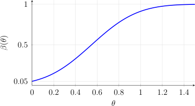
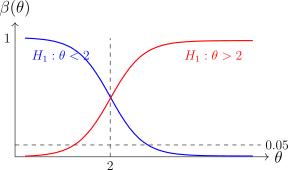

4.2 Uniformly Most Powerful Tests
Tests are usually constructed by fixing the size, which controls the probability of a type I error, and then making the probability of a type II error as small as possible; equivalently, making the power \(\beta (\theta )\) as large as possible for \(\theta \in \Omega - \Omega _0\).
4.2.1 Uniformly Most Powerful Tests and the Monotone Likelihood Ratio
Definition 4.2.1. A test of size \(\alpha \) with power function \(\beta (\theta )\) is uniformly most powerful (UMP) if \(\beta (\theta )\ge \beta ^*(\theta )\) for every \(\theta \in \Omega - \Omega _0\) and the power function \(\beta ^*\) of every other test of level \(\alpha \).
Uniformly means that one power function dominates all others at every alternative. When the alternative is simple, a single point \(\theta _1\), the word is dropped and the test is called most powerful.
Theorem 4.2.2 (Neyman–Pearson lemma). Let \(X\) have probability (density) function \(f_\theta (x)\), and consider testing the simple hypothesis \(H_0\colon \theta = \theta _0\) against the simple alternative \(H_1\colon \theta = \theta _1\). Suppose the critical region \[R = \left \{x : \frac {f_{\theta _1}(x)}{f_{\theta _0}(x)}>C\right \},\] for a constant \(C\ge 0\), has size \(\alpha \). Then \(R\) is a most powerful test of size \(\alpha \).
Proof. Let \(R_1\) be any critical region with \(P_{\theta _0}(X\in R_1)\le \alpha \), and write \(f_0 = f_{\theta _0}\) and \(f_1 = f_{\theta _1}\). Removing the common part \(R\cap R_1\), \[\beta (\theta _1) - \beta _1(\theta _1) = \int _{R\cap R_1^c}f_1\,dx - \int _{R_1\cap R^c}f_1\,dx,\] where \(\beta _1\) is the power function of \(R_1\), and in the same way \begin {equation} \label {eq:npsizes} \int _{R\cap R_1^c}f_0\,dx - \int _{R_1\cap R^c}f_0\,dx = \alpha - P_{\theta _0}(X\in R_1)\ge 0 . \end {equation} On \(R\cap R_1^c\subset R\) we have \(f_1>Cf_0\), and on \(R_1\cap R^c\), outside \(R\), we have \(f_1\le Cf_0\). Hence \[\beta (\theta _1) - \beta _1(\theta _1)\ge C\left [\int _{R\cap R_1^c}f_0\,dx - \int _{R_1\cap R^c}f_0\,dx\right ]\ge 0\] by (4.1). For discrete \(X\) replace the integrals by sums. □
The method for a composite one-sided alternative is to fix an arbitrary \(\theta _1\in \Omega - \Omega _0\), construct the most powerful test against \(\theta _1\), and check whether the critical region depends on \(\theta _1\). If it does not, the same test is most powerful against every alternative, and hence UMP.
Example 4.2.3. Let \(X_1, \dots , X_n\) be independent \(N(\theta , 1)\) with \(\Omega = [0, \infty )\), and test \(H_0\colon \theta = 0\) against \(H_1\colon \theta >0\).
- (a)
- For an arbitrary \(\theta _1>0\), find the most powerful test of size \(\alpha = 0.05\) of \(H_0\) against \(\theta = \theta _1\).
- (b)
- Does the test depend on \(\theta _1\)? Is it UMP?
- (c)
- Find and sketch its power function.
Solution.
- (a)
- The joint density is \(f_\theta (x) = (2\pi )^{-n/2}\exp \left \{-\frac 12\sum x_i^2 + n\theta \bar x - \frac n2\theta ^2\right \}\), so \[\frac {f_{\theta _1}(x)}{f_0(x)} = \exp \left \{n\theta _1\bar x - \frac n2\theta _1^2\right \}.\] Because \(\theta _1>0\), this exceeds \(C\) exactly when \(\bar x>K\) for some constant \(K\). Under \(H_0\), \(\sqrt n\,\bar X\sim N(0, 1)\), so \(0.05 = P_0(\bar X>K) = P(Z>K\sqrt n)\) gives \(K\sqrt n = 1.645\) (figure 4.2.1). The most powerful test rejects \(H_0\) when \(\bar x>\frac {1.645}{\sqrt n}\).
- (b)
- The construction used only the sign of \(\theta _1\), so the same critical region is most powerful against every \(\theta _1>0\). It is therefore the UMP test of size \(0.05\) of \(H_0\colon \theta = 0\) against \(H_1\colon \theta >0\).
- (c)
- Since \(\sqrt n(\bar X - \theta )\sim N(0, 1)\), \[\beta (\theta ) = P_\theta \left (\bar X>\frac {1.645}{\sqrt n}\right ) = P\left (Z>1.645 - \theta \sqrt n\right ) = 1 - \Phi \left (1.645 - \theta \sqrt n\right ).\] It equals \(0.05\) at \(\theta = 0\) and increases to \(1\); for \(n = 9\), \(\beta (0.5) = 0.442\) and \(\beta (1) = 0.912\). The curve is shown in figure 4.2.

The same argument works whenever the likelihood ratio is monotone in a statistic.
Definition 4.2.4. A family \(f_\theta (x)\), \(\theta \in \Omega \subset \mathbb {R}\), has a monotone likelihood ratio (MLR) in the statistic \(T(X)\) if for every \(\theta _1<\theta _2\) the ratio \(\frac {f_{\theta _2}(x)}{f_{\theta _1}(x)}\) is a nondecreasing function of \(T(x)\).
Theorem 4.2.5 (Karlin–Rubin). If the family has an MLR in \(T\), and \(c\) is chosen so that \(P_{\theta _0}(T>c) = \alpha \), then the test that rejects \(H_0\) when \(T(x)>c\) is a UMP test of size \(\alpha \) of \(H_0\colon \theta \le \theta _0\) against \(H_1\colon \theta >\theta _0\).
Proof. Fix \(\theta _1>\theta _0\). The ratio \(\frac {f_{\theta _1}}{f_{\theta _0}}\) is a nondecreasing function \(g(T)\), so \(\{T>c\}\) contains \(\{g(T)>g(c)\}\) and is contained in \(\{g(T)\ge g(c)\}\). The proof of theorem 4.2.2 goes through for such a region (on \(R\cap R_1^c\) we have \(f_1\ge g(c)f_0\) and on \(R_1\cap R^c\) we have \(f_1\le g(c)f_0\)), so \(\{T>c\}\) is most powerful against \(\theta _1\) among tests with size at most \(\alpha \) at \(\theta _0\). It does not depend on \(\theta _1\). It remains to see that the size over the composite null is still \(\alpha \): applying the same argument to a pair \(\theta '<\theta _0\), the region \(\{T>c\}\) is most powerful of its own size \(\beta (\theta ')\) for \(\theta '\) against \(\theta _0\), and is therefore at least as powerful as the test that ignores the data and rejects with probability \(\beta (\theta ')\). So \(\beta (\theta _0)\ge \beta (\theta ')\): the power function is nondecreasing, and \(\sup _{\theta \le \theta _0}\beta (\theta ) = \beta (\theta _0) = \alpha \). □
A one-parameter exponential family \(f_\theta (x) = C(\theta )e^{q(\theta )T(x)}h(x)\) with \(q\) increasing has an MLR in the natural statistic, since the ratio is \(\frac {C(\theta _2)}{C(\theta _1)}e^{[q(\theta _2) - q(\theta _1)]T(x)}\). For \(q\) decreasing, or for the alternative \(\theta <\theta _0\), the inequality is reversed.
Example 4.2.6. Let \(X_1, \dots , X_n\) be a random sample from the exponential distribution with mean \(\theta \). Find the UMP test of size \(\alpha \) of \(H_0\colon \theta \le \theta _0\) against \(H_1\colon \theta >\theta _0\), and give it for \(n = 10\), \(\theta _0 = 5\) and \(\alpha = 0.05\).
Solution. The joint density \(\theta ^{-n}\exp \left \{-\frac 1\theta \sum x_i\right \}\) is an exponential family with \(q(\theta ) = -\frac 1\theta \), which is increasing, and \(T = \sum X_i\). So there is an MLR in \(T\), and by theorem 4.2.5 the UMP test rejects \(H_0\) when \(\sum x_i>c\). Since \(\frac {2T}{\theta }\sim \chi ^2(2n)\), \[\alpha = P_{\theta _0}(T>c) = P\left (\chi ^2(2n)>\frac {2c}{\theta _0}\right ),\] so \(c = \frac {\theta _0}{2}\chi ^2_{2n}(\alpha )\), where \(\chi ^2_{2n}(\alpha )\) is the upper \(\alpha \) point. For \(n = 10\), \(\theta _0 = 5\) and \(\alpha = 0.05\), \(\chi ^2_{20}(0.05) = 31.410\), so the test rejects \(H_0\) when the ten lifetimes total more than \(c = 78.5\). Its power at \(\theta = 10\) is \(P\left (\chi ^2(20)>15.705\right ) = 0.735\).
Problem 4.2.1. Let \(X_1, \, \cdots \,, \, X_n\) be a random sample from the \(GAM(1/2,\theta )\) distribution. Find the
- (a)
- Most powerful test of size \(\alpha = 0.05\) of \(H_0:\, \theta = 2\) against the alternative \(H_1:\, \theta = \theta _1\) where \(\theta _1 < 2\).
- (b)
- Uniformly most powerful test of size \(\alpha = 0.05\) of \(H_0:\, \theta = 2\) against the alternative \(H_1:\, \theta < 2\) and sketch the power function of this test.
- (c)
- Uniformly most powerful test of size \(\alpha = 0.05\) of \(H_0:\, \theta = 2\) against the alternative \(H_1:\, \theta > 2\). On the same graph as (b) sketch the power function of this test.
Show solution
Solution. For GAM\((1/2,\theta )\), \[L(\theta ) = \frac {\prod _i x_i^{-1/2}}{\Gamma (1/2)^{n}\,\theta ^{n/2}} \exp \left \{-\frac {1}{\theta }\sum _i x_i\right \}.\]
(a)
By Neyman–Pearson the most powerful test rejects for large values of \[\frac {L(\theta _1)}{L(2)} = \left (\frac {2}{\theta _1}\right )^{n/2} \exp \left \{-\left (\frac {1}{\theta _1}-\frac 12\right )\sum _i x_i\right \}.\] Since \(\theta _1<2\) the coefficient \(1/\theta _1-1/2\) is positive, so the ratio is a decreasing function of \(\sum _i x_i\) and the test rejects for small values of it. Under \(H_0\), \(\sum _i X_i\sim \) GAM\((n/2,2)\), so \(\sum _i X_i \sim \chi ^{2}_{(n)}\) exactly, and the size-\(0.05\) region is \[R = \left \{x:\ \sum _{i=1}^{n}x_i < \chi ^{2}_{n,\,0.05}\right \}.\]
(b)
The region does not involve \(\theta _1\) — every alternative below \(2\) gives the same rejection rule — so by definition the same test is uniformly most powerful for \(H_1:\theta <2\). Its power function is \[\beta (\theta ) = P_{\theta }\left (\sum _i X_i < \chi ^{2}_{n,\,0.05}\right ) = P\left (\chi ^{2}_{(n)} < \frac {2\,\chi ^{2}_{n,\,0.05}}{\theta }\right ),\] which decreases from \(1\) as \(\theta \downarrow 0\), passes through \(0.05\) at \(\theta =2\), and tends to \(0\) as \(\theta \rightarrow \infty \).
(c)
For \(\theta _1>2\) the coefficient changes sign, the ratio increases in \(\sum _i x_i\), and the UMP test of \(H_1:\theta >2\) rejects for large values: \[R = \left \{x:\ \sum _{i=1}^{n}x_i > \chi ^{2}_{n,\,0.95}\right \},\] with power function increasing from \(0\), through \(0.05\) at \(\theta =2\), to \(1\).

Both curves pass through \(0.05\) at \(\theta =2\), which is the size constraint, and each rises towards \(1\) on the side its alternative occupies. No test can be UMP against the two-sided alternative \(\theta \neq 2\), because the two regions are different and a test cannot reject simultaneously for small and for large \(\sum _i x_i\) while keeping size \(0.05\).
Problem 4.2.2. Let \(X_1, \, \cdots \,, \, X_n\) be a random sample from the distribution with pdf \[f_{\theta }(x) = \frac {\theta }{x^{1 + \theta }}\, , \, \, x> 1, \, \, \theta > 0\] Find the
- (a)
- most powerful tests of size \(\alpha = 0.05\) of \(H_0:\, \theta = 1\) against \(H_1:\, \theta = \theta _1\) were \(\theta _1 > 1\).
- (b)
- uniformly most powerful test of size \(\alpha = 0.05\) of \(H_0:\, \theta = 1\) and sketch the power function.
- (c)
- uniformly most powerful test of size \(\alpha = 0.05\) of \(H_0:\, \theta = 1\) against \(H_1:\, \theta < 1\). On the same graph as in (b), sketch the power function of this test.
Show solution
Solution. The density is Pareto: \(f_{\theta }(x)=\theta x^{-(1+\theta )}\) for \(x>1\). Writing \(T=\sum _{i=1}^{n}\log X_i\), \[L(\theta ) = \theta ^{n}\exp \left \{-(1+\theta )\sum _i\log x_i\right \} = \theta ^{n}e^{-(1+\theta )T}.\] Note that \(\log X_i \sim \) EXP\((1/\theta )\), since \(P\left (\log X>t\right )=P\left (X>e^{t}\right )=e^{-\theta t}\), so \(T\sim \) GAM\((n,1/\theta )\) and \(2\theta T\sim \chi ^{2}_{(2n)}\).
(a)
\[\frac {L(\theta _1)}{L(1)} = \theta _1^{n}\,e^{-(\theta _1-1)T},\] which for \(\theta _1>1\) is decreasing in \(T\). The most powerful test therefore rejects for small \(T\), and under \(H_0\) we have \(2T\sim \chi ^{2}_{(2n)}\), so \[R = \left \{x:\ 2\sum _{i=1}^{n}\log x_i < \chi ^{2}_{2n,\,0.05}\right \}.\]
(b)
The region is free of \(\theta _1\), so the same test is UMP for \(H_1:\theta >1\). Its power is \[\beta (\theta ) = P_{\theta }\left (2T<\chi ^{2}_{2n,\,0.05}\right ) = P\left (\chi ^{2}_{(2n)} < \theta \,\chi ^{2}_{2n,\,0.05}\right ),\] increasing in \(\theta \), equal to \(0.05\) at \(\theta =1\) and tending to \(1\) as \(\theta \rightarrow \infty \).
(c)
For \(\theta _1<1\) the ratio increases in \(T\), so the UMP test of \(H_1:\theta <1\) rejects for large \(T\): \[R = \left \{x:\ 2\sum _{i=1}^{n}\log x_i > \chi ^{2}_{2n,\,0.95}\right \},\] with power decreasing in \(\theta \), again passing through \(0.05\) at \(\theta =1\).
Tests and confidence intervals
There is a close relationship between tests and confidence intervals, and it is worth seeing it on a concrete case before stating it in general.
Example 4.2.7. Let \(X_1, \dots , X_n\) be a random sample from \(N(\theta , 1)\), and test \(H_0\colon \theta = \theta _0\) against \(H_1\colon \theta \ne \theta _0\). The critical region \(\left \{x : |\bar x - \theta _0|>\frac {1.96}{\sqrt n}\right \}\) has size \(0.05\), and its acceptance region is \(\left \{x : |\bar x - \theta _0|\le \frac {1.96}{\sqrt n}\right \}\).
The hypothesis \(\theta = \theta _0\) is accepted exactly when \[\bar x - \frac {1.96}{\sqrt n}\le \theta _0\le \bar x + \frac {1.96}{\sqrt n},\] that is, when \(\theta _0\) lies in the usual \(95\%\) confidence interval for \(\theta \). The confidence interval is the set of null values that the test would not reject.
Theorem 4.2.8. For each \(\theta _0\in \Omega \) let \(A(\theta _0)\) be the acceptance region of a test of size \(\alpha \) of \(H_0\colon \theta = \theta _0\). Then \[C(x) = \{\theta _0 : x\in A(\theta _0)\}\] is a \(100(1 - \alpha )\%\) confidence set for \(\theta \). Conversely, if \(C(X)\) is a \(100(1 - \alpha )\%\) confidence set, then \(A(\theta _0) = \{x : \theta _0\in C(x)\}\) is the acceptance region of a test of size \(\alpha \) of \(H_0\colon \theta = \theta _0\).
Proof. For every \(\theta \), \(\theta \in C(X)\) if and only if \(X\in A(\theta )\), so \(P_\theta \left (\theta \in C(X)\right ) = P_\theta \left (X\in A(\theta )\right ) = 1 - \alpha \). The converse is the same identity read the other way. □
Problem 4.2.3. Let \(X_1, \, \cdots \,, \, X_n\) be a random sample from the \(GAM(2, \theta )\) distributions. Show that \[R = \left \{x:\, \sum ^5_{i = 1}x_i < 4.7955\, \theta _0\, \, \text {or}\,\, \sum ^5_{i = 1} x_i > 17.085\, \theta _0\right \}\] is a size \(\alpha = 0.05\) critical region for testing \(H_0:\, \theta = \theta _0\). Show that this critical region may be used to construct a \(95\%\) C.I for \(\theta \).
Show solution
Solution. Here \(n=5\) and each \(X_i\sim \) GAM\((2,\theta )\), so \(\sum _{i=1}^{5}X_i \sim \) GAM\((10,\theta )\) and \[\frac {2}{\theta }\sum _{i=1}^{5}X_i \ \sim \ \chi ^{2}_{(20)} .\]
The size
Under \(H_0:\theta =\theta _0\) the two boundaries transform to \[\frac {2(4.7955\,\theta _0)}{\theta _0} = 9.591, \qquad \frac {2(17.085\,\theta _0)}{\theta _0} = 34.170,\] and these are exactly the \(2.5\%\) and \(97.5\%\) points of \(\chi ^{2}_{(20)}\). Hence \[P_{\theta _0}(X\in R) = P\left (\chi ^{2}_{(20)}<9.591\right ) + P\left (\chi ^{2}_{(20)}>34.170\right ) = 0.025+0.025 = 0.05 ,\] so \(R\) has size \(\alpha =0.05\).
The confidence interval
Acceptance means \(4.7955\,\theta _0 \leq \sum _i x_i \leq 17.085\,\theta _0\), which rearranges to \[\frac {\sum _{i=1}^{5}x_i}{17.085} \ \leq \ \theta _0 \ \leq \ \frac {\sum _{i=1}^{5}x_i}{4.7955} .\] The set of \(\theta _0\) that would not be rejected is therefore an interval, and since the test has size \(0.05\) this interval covers the true \(\theta \) with probability \(0.95\): \[\left (\frac {\sum _i X_i}{17.085},\ \frac {\sum _i X_i}{4.7955}\right )\] is a \(95\%\) confidence interval for \(\theta \).
Note. This is the duality of the earlier example, used in the useful direction: inverting a family of size-\(\alpha \) tests produces a \(100(1-\alpha )\%\) confidence set, and the set is an interval exactly when the acceptance regions are intervals in the statistic. Nothing new is computed — the same two constants do both jobs.
Questions on this section
Stuck on something here? Ask below and it stays attached to this topic.